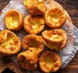

Yorkshire Puddings

Description
This is my favourite yorkshire pudding recipe. This is that missing component on your Sunday roast dinner. In this recipe I will be teaching you how to get that golden crispy yorkshire with just basic ingredients, that will blow your relitives away and leaving them asking “How have you done this magic!”
Ingredients
Like every recipe, we need to have ingredients. This recipe only needs simple ingredients that everyone should keep within their home. If not they are easily found in basic supermarkets.
- 70g plain flour
- 2 medium eggs
- 100ml milk(note: different milk will give different results)
- Cooking oil(I use sunflower)
- Little seasoning, I like to keep it simple with just salt and pepper
That is it. Super simple. Some of these can be subatuted and do not be afraid to play around with the measurements to get the yorkshire puddings of your dreams
Steps
- Heat oven.
- Normal Oven: 220C
- Fan Oven: 200C
- Gas Oven: Mark 7
- Drizzle a little bit of oil evenly into a cupcake tin. With the ingredients you can make 4 large ones or 12 small ones. Place this in the oven. We need the oil hot as possible for when we pour the batter in.
-
Making the batter! If you have not done so already tip the plain flour into a mixing bowl. Beat in the 2 eggs until smooth.
-
Gradually add in the milk. Sometimes you might not need all 100ml of milk. We want it so the batter is nice and smooth not too watery yet not to thick. Beat until there are no lumps. Add in the seasoning at this point.
- You are either pour this into a jug or leave as is. We want to acted fast to keep the heat as high at all time. Remove the tin from the oven, carefully pour batter into each hole, making sure you are getting it as evenly as possible.
- Placing the tin back inside the oven. We now need to leave this for 20-25 mins. Warning! We do NOT want to open the over door until they are done. Opening too early will result in the puddings deflating.
- Once the puddings have puffed up and browned. We need to serve them as quickly as possible. Best way to enjoy them is with a bit of gravy.
To return to the Home page click here.